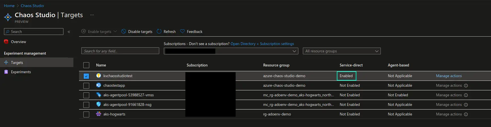
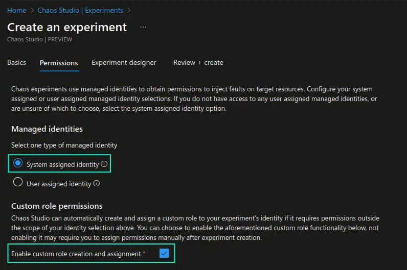
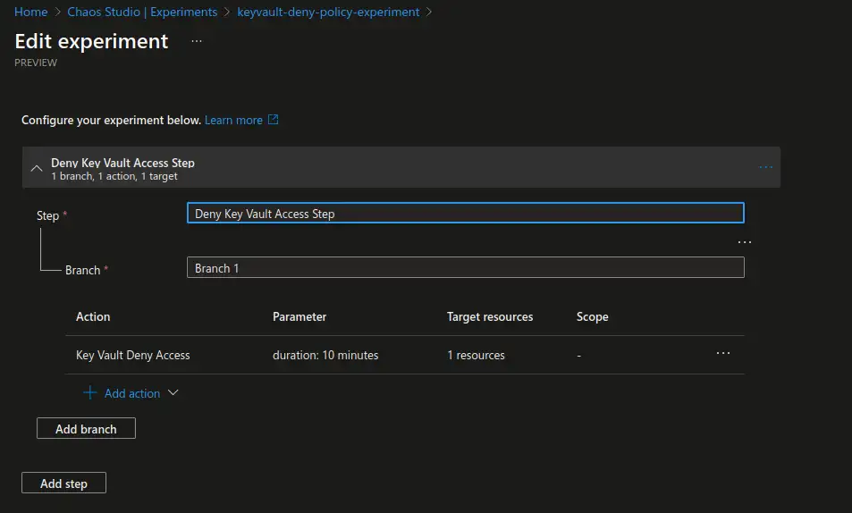
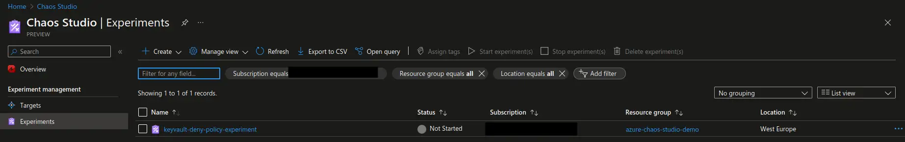
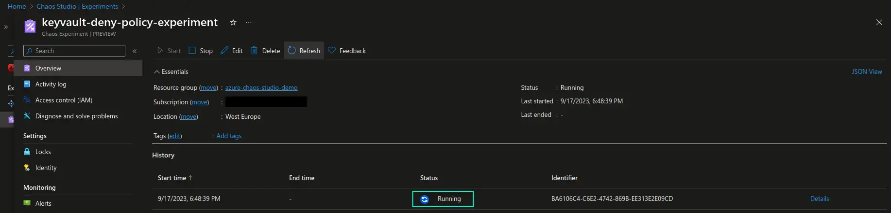
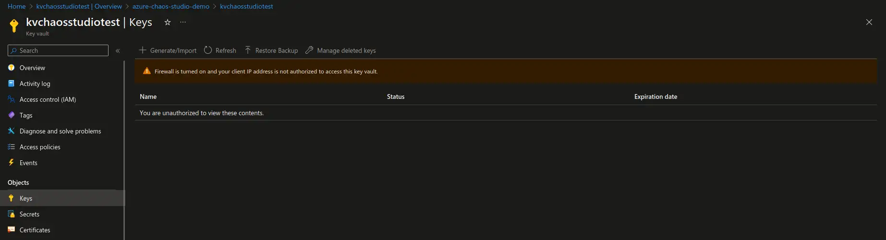

Resilience Testing of Azure Services With Azure Chaos Studio
This blog post is a contribution to Azure Back to School - an annual community event taking place in September. For the Community by the Community, during the whole month of September, contributors share their knowledge and experience about Azure. You’re welcome to check out all the contributions here: 2023 Azure Back to School Session Schedule
Introduction
Chaos engineering has been known to the tech industry for quite many years now, but it has gained significant popularity and wider adoption during the last few years. There are good reasons for why this acceleration has happened. If we take a look at a modern software development landscape we will see that we’re steadily building more complex, distributed systems and applications, with hundreds or even thousands of dependencies and interconnections. Ensuring that all of these bits and pieces play nicely together to provide availability, stability and security of our systems at all times is a challenge that’s not for the faint-hearted.
That’s where chaos engineering discipline comes in. It provides us with the tools and methodologies that can be used to perform controlled experiments that simulate real-life disruptive events, like outages or failures, so that we can monitor how our systems respond to and withstand turbulent events. The main goal is to identify ways to improve system resilience and strengthen our confidence in the respective systems.
If you’re not very familiar with chaos engineering yet, do keep an eye out for an introductory blog post that I will publish shortly after the release of this blog post. You can also check out an introductory session about chaos engineering, which will be released at Women on Stage global virtual conference 2023 in October.
Azure Chaos Studio
Very often chaos engineering is being mentioned in context of Kubernetes and Kubernetes-exclusive workloads, but this is not the only place where you can integrate chaos engineering. There are multiple chaos engineering tools that support performing experiments that target both regular servers/virtual machines and different PaaS offerings in public cloud.
Azure Chaos Studio is one of such tools. A subset of experiments in Azure Chaos Studio does indeed target Kubernetes and is built upon Chaos Mesh, which is an open source tool governed by CNCF. This part of Azure Chaos Studio functionality is out of scope for this blog post and will be covered in a subsequent blog post. In this blog post we will focus on the other subset of Azure Chaos Studio experiments, which target some of the Azure PaaS offerings like App Service and Key Vault. Since this is an introductory blog post we will look into what non-Kubernetes services we can currently target with Azure Chaos Studio, what value we can gain out of running such experiments and how we can create and execute the experiments targeting existing resources.
Targets and use cases
There are quite many resources that you can target with Azure Chaos Studio experiments in addition to Kubernetes. To name a few: Virtual Machines and Virtual Machine Scale Sets, Cosmos DB, Azure Cache for Redis, Key Vault and App Service, including resources of the Microsoft.Web/sites type, like for instance Azure Functions. You can find an overview of all the currently available targets and fault actions that can be executed against those targets here: Fault library
Since Azure Chaos Studio is still in preview I believe that with time we will see even more Azure services and fault actions being added as targets to the above library.
Now, why would you want to run such Azure Chaos Studio experiments and disrupt Azure services? What value do you gain from that?
Let’s take a look at a few examples. Let’s say that you have an application that stores specific secrets, certificates or keys in Azure Key Vault. What happens if a faulty access policy has been configured on the Key Vault or if there’s an outage in the region where the Key Vault is deployed? How will your application react to such disruptive events and will it be able to handle it gracefully by for example, providing a meaningful warning message, executing retry logic and potentially failing over to an alternative implementation? Is your current alerting system functioning properly and is it providing meaningful information in relation to the disruptive event that’s taking place?
If you were to simulate it without chaos engineering and Azure Chaos Studio, you would potentially need to do quite some coding, both in the application itself and in the technical platform that the application uses in order to simulate such a failure. It will be both time-consuming and more distant from the real-life simulation. What is beneficial with chaos engineering tools is that they take most of that implementation complexity away from you so that you can focus on the configurational side of things, as well as on building and scheduling the experiment workflows.
Another example here is App Service. Be it a web app or an Azure Function, with Azure Chaos Studio you can simulate outages in order to analyze how the application handles such disruptive events, how dependent services handle the situation where the respective application becomes offline, etc. By simulating outages of a specific region as a whole or outages targeting application instances deployed in a specific region, you can get a clear picture of the availability needs that your critical production applications may require. You can use chaos engineering experiments to identify possibilities for improvements to your applications like, for example, the need for multi-region deployment implementation where application instances are deployed across multiple regions for higher availability.
Now that we’ve identified the what and the why of running Azure Chaos Studio experiments against Azure services, let’s see how we can actually configure and trigger the experiments themselves.
Creating and executing experiments
Before we follow below steps you need to ensure that you’ve registered Microsoft.Chaos provider in the subscription where you’re planning on running chaos experiments.
As an example, let’s create and execute a Key Vault Deny Access experiment against an existing Key Vault resource.
1. Enable targets for the experiments and adjust allowed actions.
First, we need to let Azure Chaos Studio know which resources it’s allowed to target with its experiments and what experiments are allowed to be executed against those targets. We can do that in the Targets section of Azure Chaos Studio page in the Azure portal. From the list of available resources, choose those that you want to target and choose to enable either service-based or agent-based targets. Agent-based targets require installation of a dedicated agent on the resource itself to be able to simulate specific scenarios like CPU or memory pressure, therefore agent-based experiments can only target Virtual Machines or Virtual Machine Scale Sets.
In our example we will be targeting an Azure Key Vault, therefore we will only choose this resource in the list and enable service-based targets. Once the target is enabled we can go to Manage actions section of the enabled target and only enable the Key Vault Deny Access capability, since this is the only experiment we’re planning on executing at this point. It’s a good practice to enable only what you need and when you need it, which also follows a least privilege principle.

2. Create an experiment.
Now that the necessary targets have been enabled for access by Azure Chaos Studio we can start building our experiment. Let’s go to the Experiments section of Azure Chaos Studio page in Azure portal, and choose Create -> New experiment. Here we would need to provide some basic information about the resource group, name of the experiment and the location to deploy the experiment resource to.
In the Permissions section you would need to choose if you would like to use a system-assigned or user-assigned identity to perform the experiments with. In addition you need to choose if you would like the necessary permissions that the identity may require to perform the experiment, to be added automatically to the respective resources or if you would like to add those permissions manually at a later point.
Please note that if you choose a user-assigned identity, automatically added permissions will not be cleaned up after the experiment has been deleted.

Next, we’re ready to design our experiment in the Experiment designer. Here the possibilities are many: we can chain multiple fault actions together, introduce multiple fault actions running one after the other as part of a single step, before moving to the next step where a different set of fault actions will trigger. We can run group of actions in parallel as part of a single step by spreading them across branches. We can target multiple resources with the same fault action. Apart from adding fault actions we can also add delays between actions to simulate latency or delayed start of the disruption. Finally, apart from choosing fault action targets from the list we can even use a Kusto query (KQL) to choose targets even more granularly.
As you can see, there are many ways to build quite extensive workflows that can come in handy in cases where you need to test more advanced disruption scenarios that may affect multiple resources in your system. This can be especially useful in testing disaster recovery routines, business continuity plans or during GameDay or tabletop exercises, where multiple system stakeholders are involved.
We keep our example simple and create a single step with a single branch containing a single **“Key Vault Deny Access”``` action that targets a previously enabled Azure Key Vault resource. We will let the experiment run for 10 minutes so that we have enough time to observe and test.

Upon creation of the experiment it will verify that the identity has the necessary permissions to run the experiment and will apply the respective permissions if those are lacking. If you have chosen to apply permissions manually you will get a warning requesting you to add necessary permissions to the respective resource prior to running the experiment.

3. Execute a newly created experiment.
Finally, we’re ready to execute the experiment. This is the easiest part 😁
Choose the newly created experiment and start it. You will see the experiment status being updated continusouly and after some initial preparations you should see it entering the Running status.
If the experiment fails with
Error Code: AccessDenied, please ensure that the service principal for the respective experiment (service principal name equals to the experiment name) has the Azure Key Vault Contributor role on the respective Key Vault resource.

The simplest way to verify that the experiment is working is to attempt to access keys, secrets or certificates with the user that has valid access in the Key Vault in the Azure portal. The user that initially had proper access will now not be able to view any of the Key Vault objects. You should now see the warning as demonstrated in the screenshot below. From this point on you can trigger the experiment and perform testing of the applications that are dependent on the respective Key Vault resource.

A few other highlights I would like to mention before we reach the end of this blog post:
-
Infrastructure as code. You can define chaos engineering targets and experiments as infrastructure-as-code. If you’re using Terraform for this purpose, please note that while Azure Chaos Studio is in preview you will only be able to use the
AzAPIprovider to create the respective Azure Chaos Studio resources. You can find more information about it here: Microsoft.Chaos experiments -
Scheduling. You can implement scheduling to perform chaos engineering experiments continuously. Following tutorial from Microsoft shows an example where you can set up scheduling with help of Logic Apps: Tutorial: Schedule a recurring experiment with Azure Chaos Studio Preview. Please note that you can also set up a separate pipeline in GitHub or Azure DevOps to do the same. Once you transition past the PoC phase, storing chaos engineering experiments and experiment workflows as code is a recommended approach - both for transparency, efficient maintenance and change management. Keep an eye out for a future blog post on how you can set up chaos experiments and workflows as code 😉
Next time we’ll get even more hands-on and create a production-like simulation for some of the Azure services with help of Azure Chaos Studio. Stay tuned for the upcoming hands-on session on this topic!😼
Additional resources
Below you may find a few additional resources to learn more about Azure Chaos Studio and chaos engineering:
That’s it from me this time, thanks for checking in!💖
If this article was helpful, I’d love to hear about it! You can reach out to me on LinkedIn, Twitter, GitHub or by using the contact form on this page.😺
Stay secure, stay safe.
Till we connect again!😻